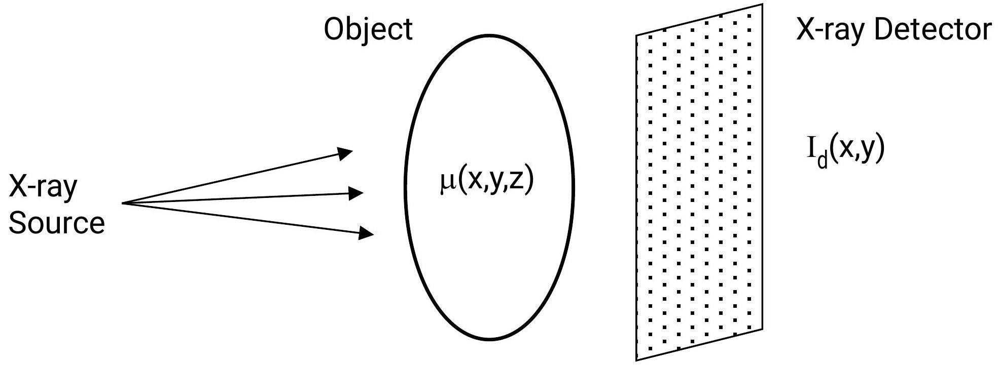

APPROACH TO IMAGING REQUESTS IN CLINICAL APPROACH
WHAT IS AN IMAGING REQUEST
- An imaging request is consultation between the clinician and the radiological team (radiologist/radiographer)
- Consultation - deliberation of 2 or more persons on some matter

Example of a radiological consultation between clinician and radiologist
OUTLINE OF AN IMAGING REQUEST DESIGN
- Patient's biodata
- Radiological examination being requested
- Relevant clinical information
- Patient's past medical history and previous imaging findings
PATIENT'S BIODATA
- Unique ID - Hospital No., clinic no. etc.
- Name
- Age
- Sex
- Date
- Address - ward, clinic, telephone, physical etc.
- LMP (female patients)

Example of a patient biodata form used in imaging requests
CLINICAL INFORMATION
- There still exists no substitute for proper history and physical examination on clinical practice
- Signs and symptoms narrow down to a particular system/organ. In some cases a definitive diagnosis is made while in others differential diagnoses are inferred clinically
- Explicit relevant information of your clinical findings guides the radiologist/radiographer to resonate with your expectations both in technique and interpretation of findings
- For female patients of reproductive age, Last Menstrual Period is important
- History of allergies if known needs to be included
FACTORS TO CONSIDER WHEN GENERATING AN IMAGING REQUEST
- Appropriateness of the examination and modality
- Patient preparation for the examination
- Limitations of the modality
DECIDING THE APPROPRIATE RADIOLOGICAL INVESTIGATION
Analyze:
- Patient's stability, immediate and special needs
- Availability of the preferred modality
- Cost
- Radiation safety considerations
- Details that need to be derived from the imaging modality
- Expertise of the imaging team
INVESTIGATION: PATIENT'S STABILITY, IMMEDIATE AND SPECIAL NEEDS
- In acute life threatening situations, patients' stability overrides any imaging and therefore the latter is done without any danger to the patient's life
- Airway, breathing, circulation (hemodynamic state) need to be sorted our before transfer of patient to the imaging department
- Special needs have to be addressed e.g. hypothermia in neonates and infants. Allergies when performing contrast studies, metallic implants when performing MRI are all risks to be considered, Can you think of any other special needs?
INVESTIGATION AVAILABILITY AND COST CONSIDERATIONS
- These are not absolute determinants but need to be factored in particularly in regard to the influence the radiological examination will have on the patient's outcome
INVESTIGATION: RADIATION SAFETY CONSIDERATIONS
- Ionizing vs. non-ionizing radiation
- If a clinical question can be adequately answered by a modality that utilizes nonionizing radiation then go for it over one that will use ionizing radiation
- Children, pregnant mothers carry the greatest risk
- Some organs are more radiosensitive than others e.g. gonads, thyroid gland, eye lens
INVESTIGATION: DETAILS EXPECTED FROM THE INVESTIGATION
- Each of the imaging modalities have their strengths and weaknesses when it comes to detailing anatomical structures and pathological processes
- Moreover, even for the appropriate modality, extent of the examination including field of view, views required and where applicable contrast introduction need to be optimized.
PATIENT PREPARATION DETAILS
- Some radiological examinations require special preparation
- I.V contrast - renal function tests
- Upper GI contrast studies - fasting at least 6 hours
- Contrast enema - bowel preparation
- IVU - bowel preparation
- Abdominal US - Fasting at least 6 hours
- Pelvic US - Full bladder
LIMITATIONS OF IMAGING MODALITIES
- Plain radiography - Poor soft tissue detail, representation of disease in 2D, ionizing radiation
- Contrast radiography - ionizing radiation. Lack of extra-luminal details, poor soft tissue details
- Ultrasound - operator dependence, inability to penetrate gas e.g. bowel disease, bone disease
- CT - radiation dose, cost, availability
- MRI - availability, cost, limited expertise, metallic implants, claustrophobia
- Angiography - invasive, limited expertise, radiation
THINGS TO AVOID WHEN GENERATING AN IMAGING REQUEST
- Inadequate information
- Poor/ineligible handwriting
- Failure to pay attention to details
- Treating imaging examination casually/poor concentration
- Use of non-standard abbreviations
REMEMBER
- If not sure of the appropriate radiological investigation consult the radiologist